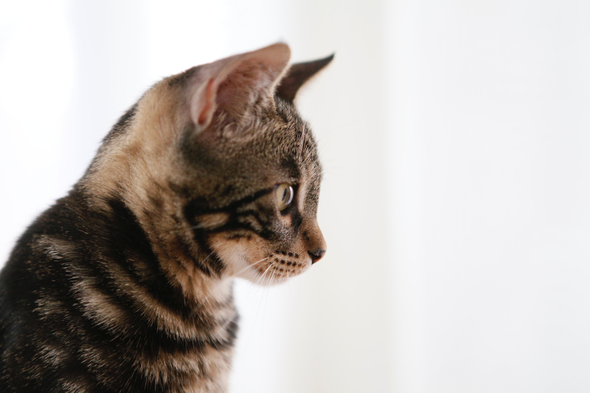

한자로는 묘(猫)라 하고, 수고양이를 낭묘(郎猫), 암고양이를 여묘(女猫), 얼룩고양이를 표화묘(豹花猫), 들고양이를 야묘(野猫)로 부르기도 한다. 현재 집에서 기르고 있는 모든 애완용 고양이는 아프리카·남유럽·인도에 걸쳐 분포하는 리비아고양이(Felis silvestris lybica)를 사육 순화시킨 것으로, 전세계에서 2억 마리가 넘게 사육되는 것으로 알려져 있다. 약 5,000년 전 아프리카 북부 리비아산(産)의 야생고양이가 고대 이집트인에 의해 길들여져서 점차 세계 각지에 퍼졌다고 한다. 이것은 고대 이집트의 벽화 ·조각, 고양이의 미라 등으로 미루어 명확하지만, 그것이 현재 사육되는 모든 고양이의 조상인지는 의문이다. 고양이를 죽이거나, 소중히 다루지 않으면 불행을 당하게 된다는 민화(民話)는 동양의 여러 나라뿐 아니라 유럽 ·아프리카 등지에도 있다. 고양이의 가축화가 현저히 발달한 고대 이집트에서는 고양이는 신성한 동물이었다. 또한 고양이가 시체를 뛰어넘으면 시체가 움직인다고 하여 고양이를 시체 가까이 두지 않는 풍습도 있으며 고양이에 관한 미신은 많다. 고양이의 거동을 사물의 전조(前兆)로 보는 습관은 세계적인 현상이다.
